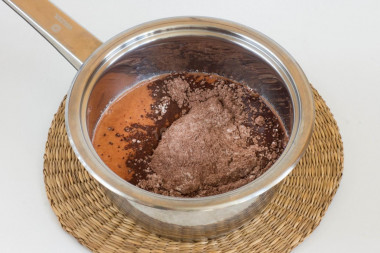
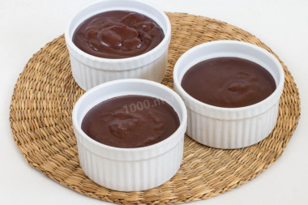

How to make pudding?

You need:
- 400 ml., of milk
- 2 tbsp sugar
- 2 tbsp cocoa
- 2 tbsp starch
- a teaspoon of salt
Step by step:
-
Pour the milk into a small ladle and heat it to about 40 degrees. milk should be neither hot nor cold.

-
In a separate container, combine and mix cocoa powder, granulated sugar, fine salt and corn starch.
If these products are added without mixing, separately, then there is a risk that cocoa and starch
will "catch" in lumps and it will be very difficult to stir them in the future.
Therefore, we will insure ourselves and mix these ingredients.
-
Remove the milk from the heat, add the starch-sugar mixture with cocoa powder,
mix and return the ladle to the fire.

-
Heat the mass to a boil, stirring constantly, it will begin to thicken noticeably.
Boil the pudding for one minute and remove from the heat.
-
Pour the hot homemade chocolate pudding into small serving molds and cool.

-
You can serve the finished pudding both warm and chilled.